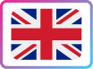
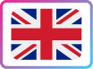

Üdvözöllek!
Ahogy a főoldalon is olvashattad, a nevem Teo, 29 éves vagyok, és jelenleg karrierváltóként az IT világában keresem a helyem.
A weboldalak iránti érdeklődésem már tinédzserkoromban elkezdődött —
akkoriban még a Gportal és a MiLapunk felületein készítettem blogokat és
hobbiprojekteket.
Érettségi után nem jelentkeztem felsőoktatásba,
mivel akkor még nem tudtam pontosan, milyen irányban szeretnék
továbbtanulni. Ehelyett fizikai munkát vállaltam, hogy önállóan
megéljek, és közben időt adjak magamnak arra, hogy megtaláljam a hozzám
illő utat.
Munka mellett több képzést is elvégeztem: barista és mesterbarista képesítést szereztem, megszereztem a jogosítványomat, valamint letettem egy B2-es angol nyelvvizsgát. Ezen kívül grafikus OKJ végzettséggel is rendelkezem.
Bár a grafika mindig is közel állt hozzám, egy negatív szakmai tapasztalat miatt egy időre háttérbe szorult. Az elmúlt időszakban viszont azon is dolgozom, hogy visszanyerjem a kreatív alkotás iránti lelkesedésemet, és újra örömet találjak a vizuális munkában.
Később ismét nyitottam az informatika felé — egy szoftverfejlesztő és tesztelő képzés során ismerkedtem meg a frontendes alapokkal, amelyek teljesen magukkal ragadtak. Azóta önállóan, saját tempómban tanulok különböző platformokon, mint a Coursera, a freeCodeCamp és a The Odin Project.
A célom, hogy olyan munkát találjak, ahol nemcsak tovább fejlődhetek, hanem értéket is teremthetek — akár grafikusként, akár frontend fejlesztőként.

Néhány dolog rólam
- - Imádok olvasni - egy jó fantasy, horror vagy krimi bármikor leköt
- - Az ősz a kedvenc évszakom - szeretem az eső illatát, a sárguló leveleket, a Halloween hangulatát és a bekuckózós délutánokat egy jó könyvvel és teával.
- - Van két cicám (Zsebi és Hella), egy csehszlovák farkaskutyám (Loki) és egy gabonasiklóm (Mazekeen)
- - Introvertált vagyok - a csend és a nyugalom tölt fel igazán
- - Szeretek utazni - a bakancslistám végtelen hosszú
- - Imádom a lassú reggeleket , amikor van időm egy forró kávé mellett olvasni
- - Hobbiként nyelveket tanulok – jelenleg az olasz és a német nyelvvel ismerkedem.
- - Sokáig szerettem rajzolni és fotózni, de egy hosszabb kreatív blokk miatt háttérbe szorultak. Most azon dolgozom, hogy újra visszataláljak hozzájuk